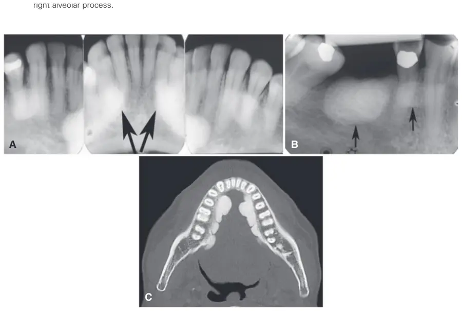

نسخه استخراجشده؛ ترجمه یا تأیید علمی انجام نشده است. وضعیت: captured
تا اینجا همهچیز ادنتوژنیک بود. حالا گروه دوم — و بعد چکیدهی یونیت.

جزیرهی استخوانی متراکم (DBI)، که انوستوز یا استئواسکلروز ایدیوپاتیک هم نامیده میشود، «همتای درونی اگزوستوز» است: رشد هامارتوماتوز موضعی استخوان کورتیکال به درون فضای استخوان اسفنجی. بیعلامت و اتفاقی کشف میشود، بیشتر در پرمولر و مولر مندیبل، و هیچ اثری بر ساختارهای مجاور ندارد. حاشیهاش مستقیماً به استخوان اسفنجی طبیعی میرسد و گاهی با ترابکولهای اطراف ادغام میشود.
و استثنایی که باید بدانی: DBI میتواند ریشهی مولر اول مندیبل را تحلیل ببرد — ولی «در همهی شرایط، پالپ دندان وایتال است و تحلیل ریشه خودمحدودشونده به نظر میرسد»، و اغلب یک فضای PDL قابل رؤیت میان ریشهی تحلیلرفته و DBI میماند.
استئوما — کندرشد، از پریوست منشأ میگیرد، بیشتر در افراد بالای ۴۰ سال، و بیشتر در مندیبل — بهویژه روی مرز تحتانی. سه نوع ساختاری: کورتیکال (عاجی/ivory)، اسفنجی، و ترکیبی. استئومای صرفاً کورتیکال یکنواخت رادیواوپک است و کورتکس قابل تشخیصی ندارد؛ نوع اسفنجی ترابکولاسیون داخلی و حاشیهی کورتیکه نشان میدهد.
و استئومای سینوس، یک عارضهی پنهان دارد: استئومای سینوس فرونتال و سلولهای اتموئید میتواند بیعلامت باشد، ولی اگر بزرگ شود «خروج ترشح موکوس را مسدود میکند و شرایط تشکیل موکوسل را میسازد».
و سندرمی که نباید از چشمت بیفتد — پولیپوز آدنوماتوز فامیلیال: اختلالی ژنتیکی از جهش ژن APC که به پولیپهای متعدد کولون میانجامد، و این پولیپها در فرم کلاسیک بهطور میانگین در ۳۹ سالگی بدخیم میشوند. سندرم گاردنر زیرگروهی از آن است با استئوماهای متعدد، جزیرههای استخوانی متراکم متعدد، کیستهای اپیدرموئید و تومورهای دسموئید. استئوماها در دههی دوم ظاهر میشوند.
و جملهای که باید در ذهن بماند: «چون استئوماها و DBIها اغلب پیش از شناسایی پولیپهای رودهای پدید میآیند، شناخت زودهنگام سندرم میتواند جان بیمار را نجات دهد.» و اگر استئوما نبود، حضور پنج یا بیشتر DBI هم میتواند به این سندرم اشاره کند. دندانهای اضافه و نهفته و اودونتوم هم در گاردنر دیده میشوند.
استئوبلاستوما — نئوپلاسم خوشخیم استئوبلاستها، شایعتر در مهرهها، با نسبت مرد به زن ۲ به ۱ و میانگین سن ۱۷ سال. بیمار اغلب درد و تورم گزارش میکند. در فکها در نواحی دنداندار و TMJ دیده میشود، و ضایعات اغلب یک حاشیهی رادیولوسنت داخلی پیرامون مؤلفهی مینرالیزه دارند. استخوان را متسع میکند ولی معمولاً یک کورتکس بیرونی نازک حفظ میشود.
همانژیوم مرکزی — خطرناکترین ضایعهی این یونیت. بیشتر در دههی اول، با غلبهی زنان ۲ به ۱. مندیبل حدود دو برابر ماگزیلا، و شایعترین محل بدنهی خلفی و راموس، و درون کانال آلوئولار تحتانی.
و نشانههای بالینی که هیچ ضایعهی دیگری در این یونیت ندارد: توده ممکن است قابل فشرده شدن باشد یا نبض داشته باشد، و در سمع برویی شنیده شود، خونریزی لثه، و «لقی بازگشتی» (rebound mobility) — دندان وقتی به داخل ساکت فشرده شود، «ظرف چند دقیقه بهدلیل فشار شبکهی عروقی پیرامون ریشهها به جای اول برمیگردد». آسپیراسیون خون شریانی تحت فشار قابلتوجه میدهد.
روی تصویر: حاشیه بسیار متغیر — از واضح و کورتیکه تا نامشخص و شبیه بدخیمی. داخل میتواند کاملاً رادیولوسنت باشد، یا با استخوان محبوس در ضایعه ظاهر مولتیلوکولار با ترابکولهای درشت و متراکم بگیرد، یا الگوی لانهی زنبور از فضاهای دایرهای کوچک بسازد که همان عروق در راستای پرتو هستند.
و دو نشانهی اختصاصی دیگر: اگر کانال آلوئولار تحتانی درگیر باشد، کل کانال بزرگ میشود و مسیرش مارپیچ و مارمانند میگردد، و در بافت نرم، فلبولیتها — ترومبوسهای کلسیفیه — دیده میشوند. و اگر همانژیوم الگوی سانری اسپیکوله بسازد، «افتراقش از بدخیمی استخوانساز دشوار است».
و جملهای که باید هرگز فراموش نکنی: «همانژیوم مرکزی باید بدون تأخیر درمان شود، چون ترومایی که یکپارچگی فک درگیر را بر هم بزند میتواند به خونریزی کشنده بینجامد.» درمان: آمبولیزاسیون، رزکشن en bloc با بستن رگ تغذیهکننده، و روشهای اسکلروزان.
و تومورهای عصبی: نوروفیبروماتوز نوع ۱ (بیماری فون رکلینگهاوزن) یکی از شایعترین بیماریهای ژنتیکی است و حدود ۱ در ۳۰۰۰ تولد را درگیر میکند. تغییرات فک اغلب یکطرفهاند: بزرگ شدن ناچ کرونوئید، زاویهی منفرجهی مندیبل، و بزرگ شدن فورامن مندیبولار. و نوروفیبرومای در حال تکامل درون کانال آلوئولار تحتانی میتواند بزرگ شدن دوکیشکل کانال بسازد.
و فیبروم دسموپلاستیک — نئوپلاسمی تهاجمی و انفیلتراتیو که کلاژن فراوان میسازد؛ بیشتر در افراد زیر ۳۰ سال با ترجیح خفیف زنان، و میتواند بافت نرم را تهاجم کند.
سؤالهای این مرور سختترند و بسیاری از آنها یک ظاهر مولتیلوکولار میدهند و میپرسند کدام یک ویژگی — شکل سپتوم، میزان اتساع، سن، یا یک آزمون غیرتصویری — تشخیص را قفل میکند.
نوع سؤال: ساخت کلمه · 10 خانه
حروف منبع: ن · ر · ا · ج · ی · ن · ا · ف · ی · ت